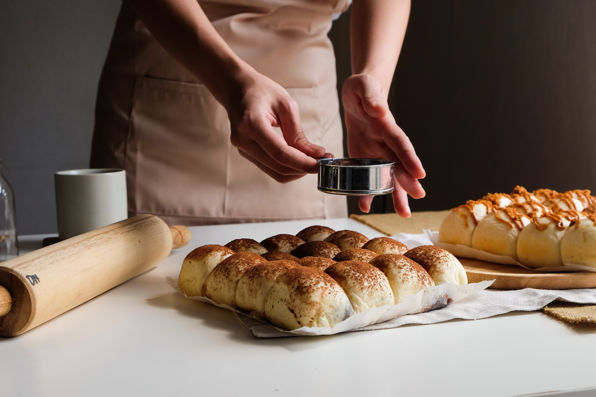

El Mundo Post-Pandemia
Sinergia entre paises hermanos para la recuperación de la Sociedad

La vida antes de la pandemia
Mucho del trabajo se realizaba en lugares con mucha gente, para ahorrar espacio y tener al personal bajo supervisión la mayor parte del tiempo.
foto: Alex Kotliarskyi

Antes de la pandemia a pesar de cualquier riesgo a la salud ya existente la gente utilizaba el mínimo de protección.
foto: Randy Fath

La vida durante la pandemia
El servicio de comidas en las zonas públicas se volvió un lugar con estrictos protocolos de seguridad y aforos reducidos.
foto: Angelica Escobar

La mayoría de la población optó por el uso de aplicaciones para el servicio de comida a domicilio, en especial los que trabajaban en casa.
foto: Cardmapr NL

Surgió muchos emprendimientos artesanales, por ejemplo, la venta de pan casero por internet.
foto: Sandi Benedicta
El seguimiento de los protocolos de seguridad optó por acostumbrar a la población con mejores prácticas de higiene y cuidados de la salud.
foto: Tai S.
El uso del dinero en físico se redujo en gran medida para optar solo por la moneda electrónica como medida de higiene y cuidados de la salud
foto: Alexander Mils
La necesidad de nuevas contrataciones aumentó en puestos de trabajo que se ajustaran a labores de teletrabajo
foto: Ernie Journeys
La pandemia no impidió un riesgo en su economía. Gran parte de la población siguió con sus actividades algunos precavidos con los protocolos de seguridad, otros seguían sin creer en la existencia de la pandemia.
foto: Gabriella Clare

Muchos ciudadanos no estuvieron de acuerdo con los protocolos de seguridad debido a la desinformación o a la no creencia de la pandemia
foto: Travis Spradling

La vida post-vacuna